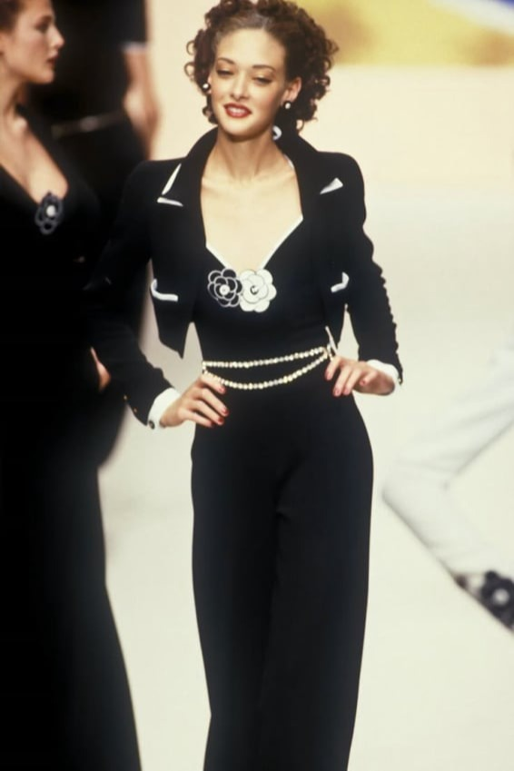
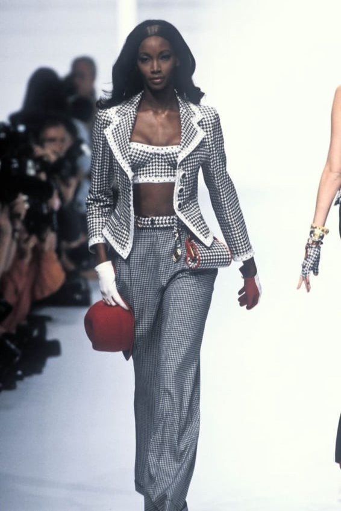
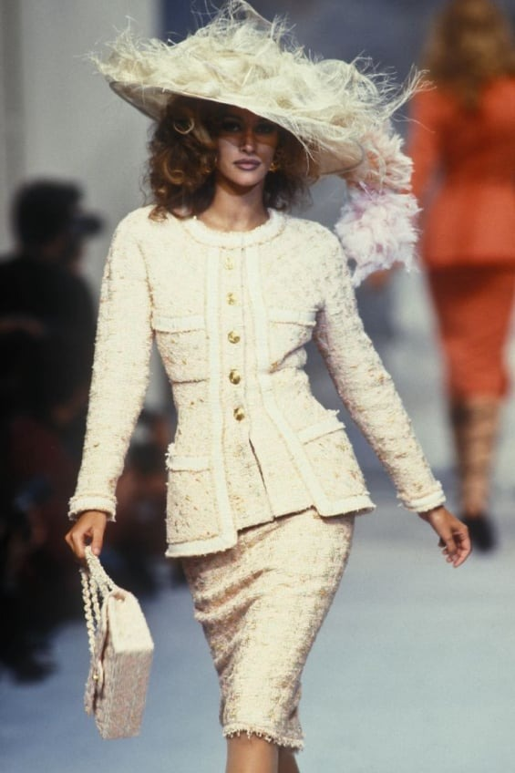
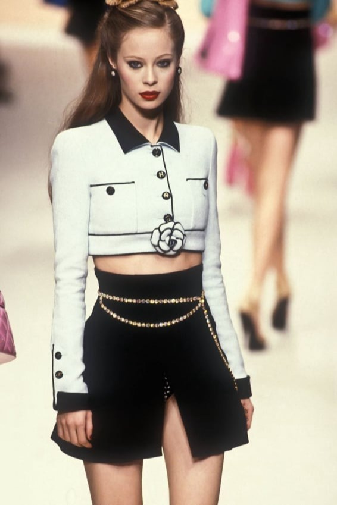
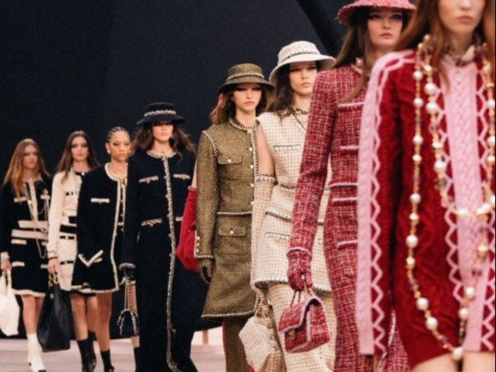
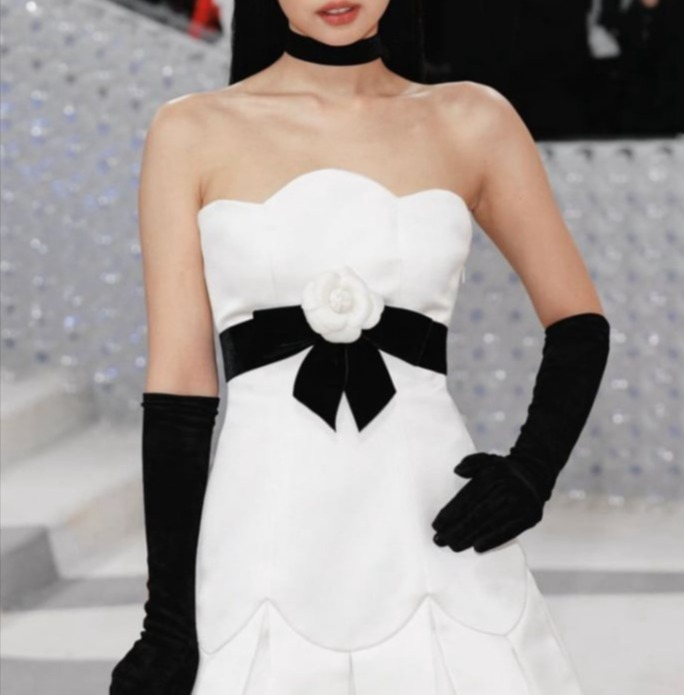
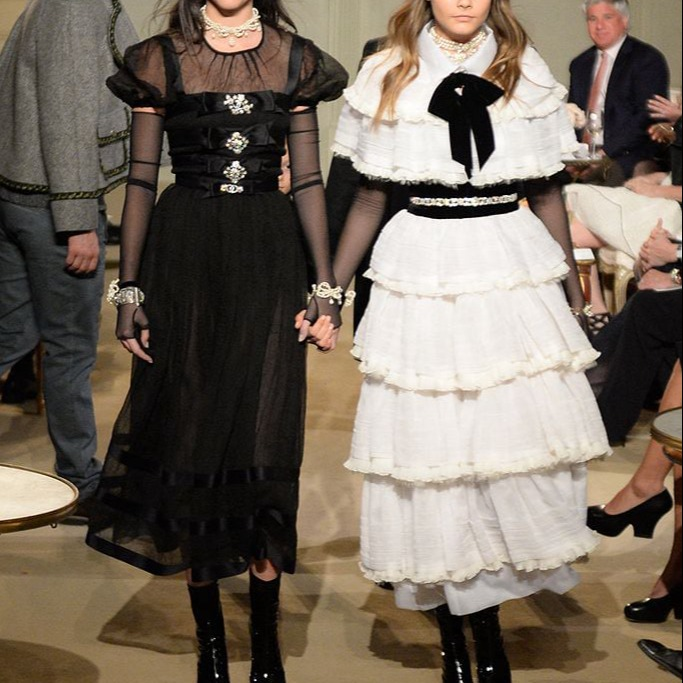

Еволюцията на майсторството в Chanel
Репутацията на Chanel бе изградена върху безупречна изработка и трайно качество. Златната ера на марката (80-те и 90-те години на миналия век) създаде изделия, които наистина бяха направени, за да оцелеят във времето – плътен вълнен туид, подплати от чиста коприна и масивен обков с 24-каратово златно покритие, който с годините развива красива патина. Тези неща не бяха просто модерни; те бяха инвестиции, които могат да се носят десетилетия.
Chanel през 80-те и 90-те




Имаше време, когато покупката на Chanel означаваше инвестиция в носимо семейно наследство. Саката, които Карл Лагерфелд създаде в края на 80-те и през 90-те години, бяха чудеса на конструкцията – всяко от тях изискваше близо 100 часа ръчен труд. Туидът, тъкан от най-фината шотландска вълна и френска коприна, беше толкова плътен, че сакото можеше да стои изправено само. Месинговите верижки бяха потапяни в 24-каратово злато толкова много пъти, че придобиваха качество на музейни експонати. Това бяха дрехи, създадени да надживеят собствениците си, и много от тях все още циркулират на винтидж пазара, изглеждайки почти нови след 30 години.

Бавната ерозия на качеството
Някъде между стогодишнината на марката и настоящите етикети с цени от 10 000 долара, Chanel започна да пести от материали, докато едновременно вдигаше цените. Едно „луксозно“ туидово сако от 2024 г. съдържа 30% синтетични влакна – нещо нечувано през 90-те. Емблематичните верижки на чантите вече тежат с 40% по-малко, тъй като са кухи отвътре, за да се спести от цената на метала. Най-шокиращото? Саката за 9500 долара сега са с полиестерни подплати на ръкавите – материя, която самата Коко Шанел би презирала. Въпреки това, маркетингът продължава да лансира същата история за „вечното майсторство“, разчитайки на това, че клиентите не знаят как се усеща истинското качество на Chanel.
Модерната реалност
Днешният Chanel разказва различна история. Докато емблематичният дизайн остава, материалите и конструкцията са видимо променени. Туидът е по-лек, често смесен със синтетика. Подплатите, които някога бяха чиста коприна, сега са полиестерни смеси. Известните верижки се усещат кухи в сравнение с тежките си предшественици. Въпреки това цените скочиха до небето, като някои артикули струват три пъти повече, отколкото през 90-те (коригирано спрямо инфлацията).

Какво все още си заслужава да се купи
Не всичко от модерния Chanel е създадено по един и същ начин. Колекциите Métiers d'Art все още демонстрират изключително майсторство, а линията за висша бижутерия поддържа традиционните техники. Винтидж парчетата (особено от периода 1983–1996 г.) остават „златният стандарт“ за качество.

Това, което не искат да знаете
Бивши служители в ателиетата съобщават за притеснителни промени:
Подплатите на полите, които някога са били изцяло ръчно пришити, сега са залепени.
Известното капитониране на чантите използва по-малко шевове на квадратен инч.
Златният обков вече е просто метал със златист цвят, който се изтрива за месеци.
Експерти по автентичност отбелязват, че модерните изделия развиват следи от износване само за 2-3 години – нещо, което при старите предмети отнемаше десетилетия.
Последният истински Chanel
Ако държите да купите нещо ново, фокусирайте се върху:
Métiers d'Art (единствената колекция, която все още се изработва изцяло във Франция).
Висша бижутерия (все още се произвежда в оригиналните работилници).
Класически чанти (Classic Flaps) със серийни номера под 30XXXXXX.
Във всеки друг случай, разумната инвестиция е във винтидж моделите. Сако от 90-те години може да струва между 3000 и 5000 долара – по-малко от половината на днешната цена в магазина – но ще надживее всичко, което се предлага в бутиците в момента. Туидът няма да се завали на топчета, копринената подплата няма да се скъса, а златото няма да се изтрие. Това е истинското наследство на Chanel – ако знаете къде да гледате.
Горчивата истина?
Днешният Chanel се крепи на носталгията по марката, която беше някога. Истинският тест за лукс не е логото – а дали нещо става по-красиво с времето. По този показател, най-вечните изделия на Chanel са тези, които вече са на няколко десетилетия.
Модната къща Chanel остава икона, но интелигентните купувачи трябва да влизат в бутиците с широко отворени очи за това какво всъщност купуват в днешния луксозен пейзаж.